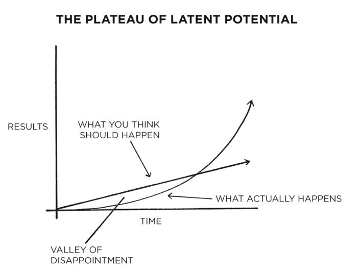
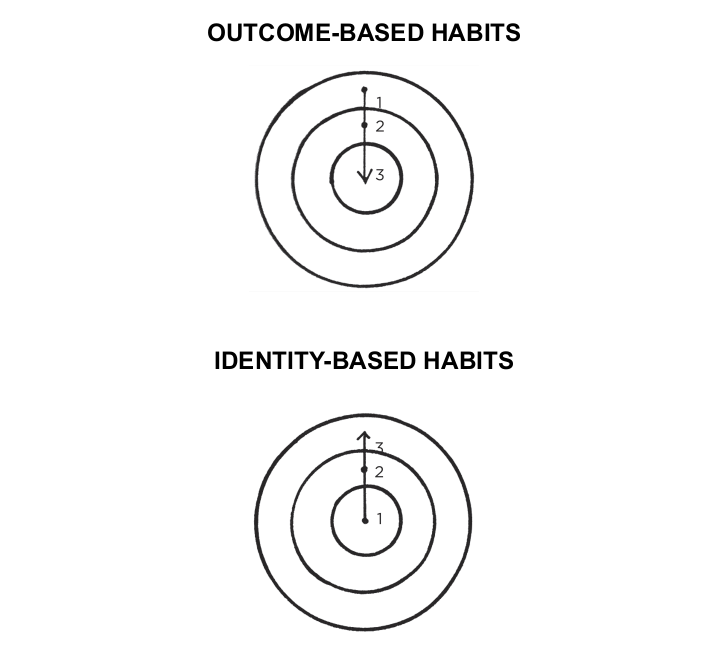

Atomic habits are key to making big differences. As James Clear said in his book "Atomic Habits," "Habits are the compund interest of self-improvement. The same way money multiplies through compound interest, the effects of you habits multiply as you repeat them.
Consider The Plateau of Latent Potential. While many people expect progression to result linearly, results occur exponentially.
"We often expect progress to be linear. At the very least, we hope it will come quickly. In reality, the results of our efforts are often delayed. It is not until months or years later that we realize the true value of the precious work we have done. This can result in a "valley of dissapointment" where people feel discouraged after putting in weeks or months of hard work without expereincing any results. However, this work was not wasted. It was simply being stored. It is not until much later that the full value of previous efforts is revealed" (22).
Winners and losers have the same goals; achieveing a goal is only a momentary change; goals restrict your happiness, enforcing an "either-or" conflict; goals are at odds with long-term progress. These are some of the many problems with setting goals instead of focusing on consistent systems. Completing atomic habits are the building blocks to getting 1% better every day.
"Many people begin the process of changing their habits by focusing on what they want to achieve. This leads us to outcome-based habits.The alternative is ot build identity-based habits. With this approach, we start by focusing on who we wish to become" (31).
With outcome-based habits, the focus is on what you want to acheive. With identity-based habits, the focus is on who you wish to become. First, decide the type of person you want to be. Then, prove it to yourself with small wins.
Click "Next" to learn about the first law of atomic habits!